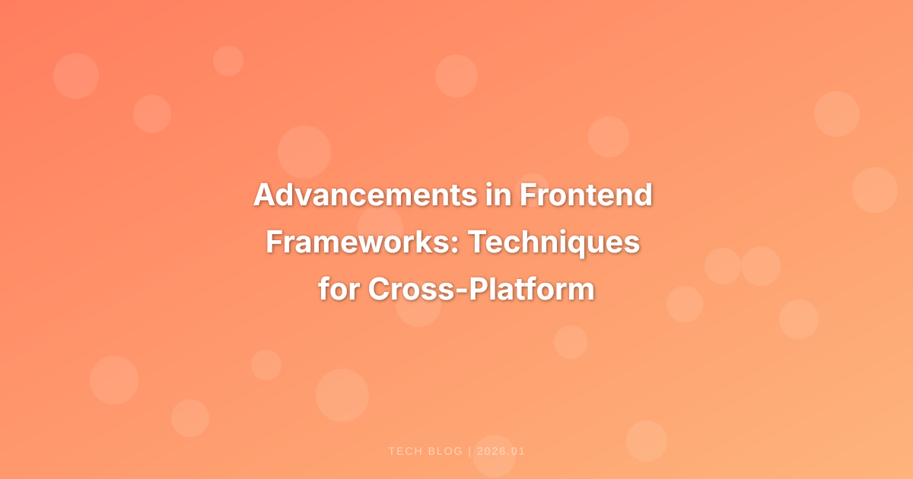

This article explores the latest advancements in frontend frameworks, focusing on techniques for cross-platform development and performance optimization. It discusses popular frameworks, their features, and best practices for creating high-performance applications.
Advancements in Frontend Frameworks: Techniques for Cross-Platform Development and Performance Optimization
Frontend development has evolved significantly over the past decade, driven by the need for responsive, immersive, and efficient user experiences. With the rise of various frameworks, developers can now create applications that are not only visually appealing but also performant across multiple platforms. This article delves into the latest advancements in frontend frameworks, emphasizing techniques for cross-platform development and performance optimization.
The Landscape of Frontend Frameworks
1. Popular Frontend Frameworks
The frontend ecosystem is vibrant, with several frameworks leading the charge:
- React: Developed by Facebook, React is a JavaScript library for building user interfaces. Its component-based architecture promotes reusability and easy maintenance.
- Vue.js: Known for its flexibility, Vue.js allows developers to incrementally adopt its features. It’s particularly favored for building single-page applications (SPAs).
- Angular: A full-fledged framework maintained by Google, Angular offers a comprehensive solution with a strong focus on performance and scalability.
- Svelte: A relatively new entrant, Svelte shifts much of the work to compile time, resulting in smaller and faster applications.
2. The Need for Cross-Platform Development
Cross-platform development has become essential as users demand seamless experiences across devices—desktops, tablets, and smartphones. Frameworks that support cross-platform capabilities help developers write code once and deploy it across various platforms, saving time and resources.
Techniques for Cross-Platform Development
1. Component-Based Architecture
Component-based architecture is a hallmark of modern frontend frameworks. This approach allows developers to create reusable UI components that can be shared across different platforms. For example, React’s component model enables developers to build encapsulated components that manage their state, making them easily reusable in different contexts.
2. Progressive Web Applications (PWAs)
PWAs combine the best of web and mobile apps, providing a native-like experience in the browser. They can work offline, send push notifications, and be installed on the user’s home screen. Frameworks like Angular and React offer built-in support for building PWAs, making it easier to create cross-platform applications that behave like native apps.
3. Responsive Design Techniques
Responsive design ensures that applications look good on any device size. Techniques such as fluid grids, flexible images, and media queries are essential in creating adaptable layouts. Frameworks like Bootstrap and Tailwind CSS streamline the process of implementing responsive design, allowing developers to focus on functionality rather than layout intricacies.
4. Server-Side Rendering (SSR) and Static Site Generation (SSG)
To enhance performance and SEO, frameworks like Next.js (for React) and Nuxt.js (for Vue.js) offer SSR and SSG capabilities. SSR generates pages on the server, delivering fully rendered pages to the client, which significantly improves load times. SSG pre-renders pages at build time, providing fast delivery and improved performance.
5. Hybrid Mobile App Development
Frameworks like Ionic and React Native allow developers to build hybrid mobile applications using web technologies. These frameworks enable developers to leverage their existing web development skills to create mobile apps, reducing the learning curve and time to market.
Performance Optimization Techniques
As frontend frameworks evolve, so do the strategies for optimizing application performance. Here are some techniques that can be employed:
1. Code Splitting
Code splitting is a technique where the application code is divided into smaller bundles, which can be loaded on demand. This reduces the initial load time and improves the perceived performance of the application. Frameworks like React and Vue provide built-in support for code splitting, enabling developers to implement it easily.
2. Tree Shaking
Tree shaking is a technique used to eliminate dead code from the final bundle. This is particularly useful in larger applications where not all imported libraries or modules are used. Modern bundlers like Webpack and tools like Rollup automatically perform tree shaking, ensuring that only necessary code is included in the final build.
3. Lazy Loading
Lazy loading defers the loading of non-essential resources until they are needed. This is especially useful for images and components that are not immediately visible to the user. By implementing lazy loading, developers can significantly enhance the initial load time of their applications.
4. Optimizing Assets
Optimizing images, scripts, and stylesheets is crucial for performance. Techniques such as image compression, using SVGs, and minifying CSS and JavaScript files can greatly reduce the size of assets, leading to faster load times. Tools like ImageOptim and UglifyJS can assist in automating asset optimization.
5. Caching Strategies
Implementing effective caching strategies can dramatically improve performance. Leveraging browser caching, service workers, and CDNs (Content Delivery Networks) can ensure that users experience faster load times, especially for repeat visits. Frameworks like Workbox help developers implement caching strategies with ease.
Best Practices for High-Performance Applications
To ensure optimal performance in cross-platform applications, developers should adhere to the following best practices:
1. Keep Dependencies to a Minimum
Every additional library or framework increases the size of the application, potentially impacting performance. Developers should evaluate the necessity of each dependency and consider alternatives that are lightweight and performant.
2. Optimize Rendering
Minimizing re-renders and optimizing rendering paths can lead to significant performance gains. Techniques such as memoization in React and using the v-show directive in Vue can help manage rendering efficiently.
3. Monitor Performance
Regularly monitoring application performance using tools like Google Lighthouse, WebPageTest, or Chrome DevTools can help identify bottlenecks and areas for improvement. Performance budgets can also be established to maintain standards throughout the development process.
4. Implement Accessibility Best Practices
While not directly related to performance, ensuring that applications are accessible can improve overall user experience. Implementing ARIA (Accessible Rich Internet Applications) roles and attributes helps create applications that are usable by everyone, including those with disabilities.
5. Continuous Learning and Adaptation
The frontend landscape is continually evolving, and developers must stay informed about new tools, techniques, and frameworks. Engaging in communities, attending conferences, and participating in workshops can enhance knowledge and skills, enabling developers to adopt the best practices and technologies more effectively.
Conclusion
As the demand for high-quality, cross-platform applications continues to grow, advancements in frontend frameworks offer developers the tools and techniques necessary to meet these expectations. Through component-based architecture, progressive web applications, and performance optimization strategies, developers can create efficient, scalable applications that deliver exceptional user experiences. By staying updated on trends and best practices, developers can harness the full potential of modern frontend frameworks, paving the way for innovative solutions in the ever-evolving digital landscape.
References
- React Documentation
- Vue.js Documentation
- Angular Documentation
- Svelte Documentation
- Google Lighthouse
Image Prompts
- realistic photo, no text, showcasing a developer working on a laptop with code on the screen.
- a modern workspace with multiple devices displaying a responsive web application.
- a visual representation of a performance optimization chart, indicating improved load times.